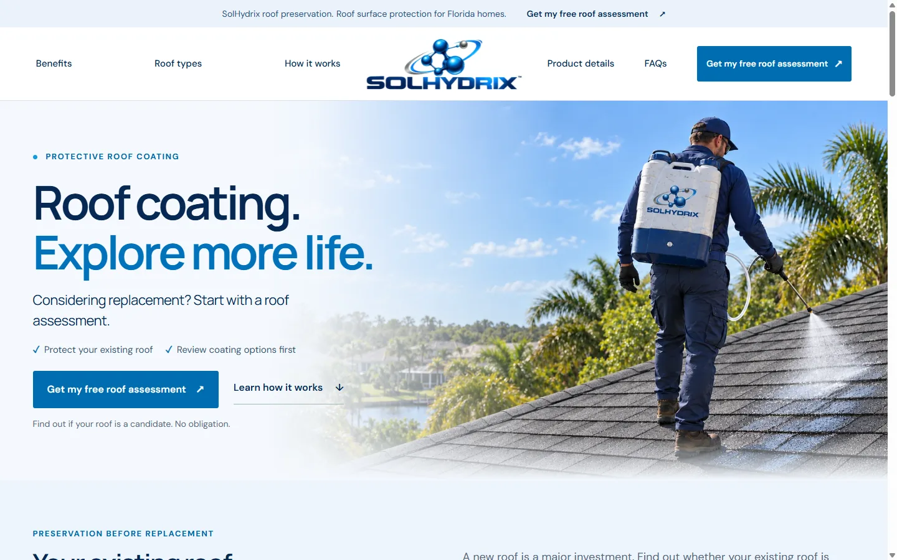
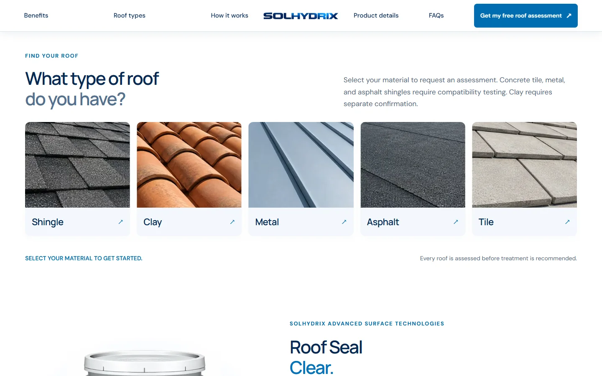
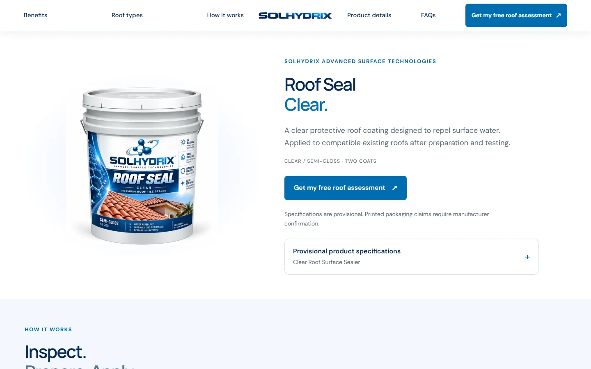
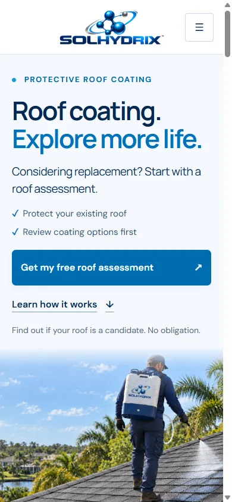
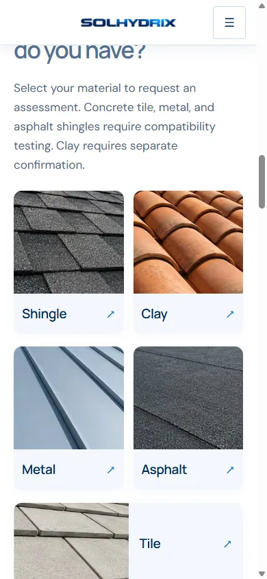
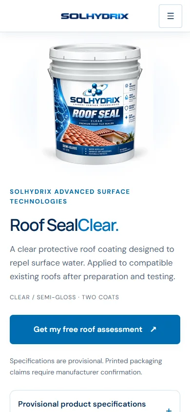
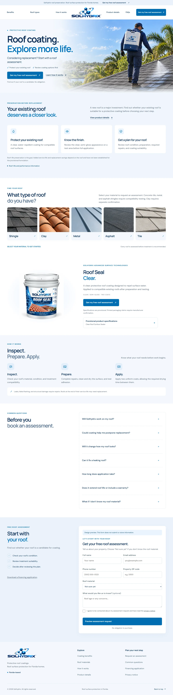

PHP templates
Server-rendered header, content, footer, SEO metadata, product details, and brand selection.
SELECTED WEB WORK / 01
A custom WordPress experience that explains roof coating clearly and guides the next step.
I designed the page structure, shaped the copy, built the theme, and tuned its responsive image and CSS delivery for a Florida roof coating concept.
Version 0.1.0 · Custom classic theme · Private source

THE EXPERIENCE / SCREENSHOTS
The homepage leads with the product category and one clear action. Visitors can then inspect roof materials, see the branded product, and open provisional details when they need them.






UNDER THE HOOD / V0.1.0
The design is implemented as a custom classic theme. WordPress manages Page content; PHP renders the site structure and responsive sections. The original site uses a separate plugin for assessment submission handling.
See selected code examplesServer-rendered header, content, footer, SEO metadata, product details, and brand selection.
Editable style layers, a generated production bundle, self-hosted fonts, and sized AVIF/WebP artwork.
Mobile navigation, sticky header changes, and section behavior. The main content remains readable without scripts.
Copy revisions, rejected artwork, technical claim review, browser checks, and measured local performance.
DESIGN AND DELIVERY EVIDENCE
TWO WAYS TO REVIEW
The public preview shows the customer experience. The case study records the decisions and implementation that produced it.
Review the live design, then discuss your brand, content, conversion path, and launch needs.
See responsive decisions, code excerpts, copy revisions, and the scope of the performance checks.
PROJECT SCOPE / CURRENT STATUS
The private source is version 0.1.0 and tailored to SolHydrix. A wider commercial theme release needs general WordPress templates, editable menus, demo import, translation support, and asset redistribution clearance.
LET'S BUILD SOMETHING USEFUL
I can discuss a tailored WordPress experience, the next phase of this theme, or web and design work on your team.